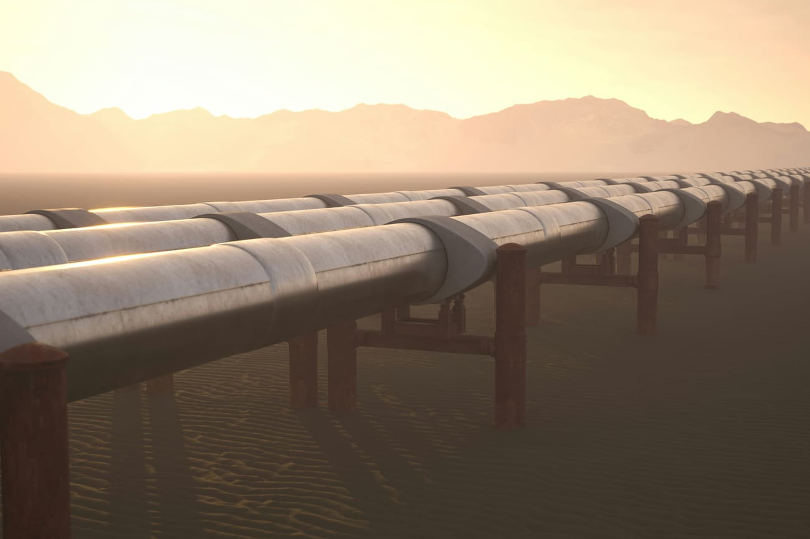

01 — Énergie · Fusion nucléaire · Cadarache
01 — Énergie · Fusion nucléaire · CadaracheITER
Premier réacteur expérimental de fusion thermonucléaire à l'échelle industrielle. 35 pays partenaires, un assemblage machine d'une complexité sans précédent, et un calendrier sous contrainte permanente. Lead Planning sur le Tokamak Complex, coordination multi-contractors.
EACOP
Oléoduc de 1 443 km reliant les champs pétroliers d'Ouganda au port de Tanga en Tanzanie : le plus long pipeline de pétrole brut chauffé au monde. Geozey mobilisé sur le lot Télécom & Sécurité (SNEF EKIUM / Schneider) avec une équipe de 3 experts couvrant PMO planning, doc control & qualité, et logistique export matériel.
EOLMED
Ferme pilote éolienne flottante en Méditerranée, à 15 km au large de Gruissan. Trois turbines V164 de 10 MW posées sur fondations flottantes BW Ideol. Une première mondiale énergisée en 2026.
ARIANEO
Centre multi-filières de valorisation des déchets pour la Métropole Nice Côte d'Azur, exploité par Veolia. Modernisation de l'unité de valorisation énergétique, création d'un nouveau centre de tri, exploitation sous délégation de service public.

05 — Défense · ToulonBARRACUDA — Base navale de Toulon
Modernisation complète des infrastructures d'accueil des sous-marins nucléaires d'attaque de classe Suffren. Programme stratégique de souveraineté nationale, environnement classifié, chantier multi-phases sur 15 ans. L'une des missions les plus longues de Geozey : preuve de confiance dans un environnement où continuité et fiabilité sont non négociables.
GIGAFACTORY ACC
Première gigafactory de batteries pour véhicules électriques en France, portée par le JV Stellantis / Mercedes-Benz / TotalEnergies. Geozey intervenu sur deux périmètres : phase R&D à Bruges (planning & Power BI) et phase construction à Douvrin (OPC supervision manutention, puis responsable de zone sur la phase finale).
GIGAFACTORY VERKOR
Première gigafactory Verkor inaugurée en décembre 2025 à Bourbourg, près de Dunkerque. Capacité initiale de 16 GWh/an, portée par Renault et les fonds France 2030. Geozey mobilisé sur la supervision OPC manutention et les interfaces MOE : mission menée jusqu'à son terme avec satisfaction client.
PROJET DÉFENSE — Bergerac
Construction d'une nouvelle unité industrielle stratégique sur site vierge, commandée en urgence par l'État français. 15 bâtiments livrés en moins de 2 ans, inaugurés en mars 2025 par les ministres des Armées et de l'Économie. Geozey intervenu en phase amont sur l'intégralité du cycle études.
BIOMÉTHANE — Engie Renewable Gases
Mission de transformation PMO pour l'entité biométhane d'Engie, constituée par acquisition de plusieurs acteurs du secteur. Triple périmètre : standardisation des plannings (petite / moyenne / grande unité), formation des équipes aux méthodes projet, support terrain sur les projets en construction. Mission prolongée jusqu'à fin 2026 sur résultats.
EXPORT KOWEÏT — Réseau météo DGCA
Deux missions consécutives pour la modernisation du réseau d'observation météorologique de la Direction Générale de l'Aviation Civile du Koweït. D'abord pour Sterela (contrat AWOS de 18 M€, 38 stations météo et qualité de l'air sur 7 ans), puis sollicité par un second donneur d'ordre pour le même client final : un troisième contrat en cours de finalisation.
PRINCIPLE POWER (PPI)
Startup californienne passée au stade industriel après levée de fonds. Geozey mobilisé dès la création des process PMO : plannings multi-projets sur Primavera, dashboards de suivi heures / avancements, reporting CEO et actionnaires, coordination avec Eiffage sur le projet EFGL. Intervention structurante sur une organisation qui partait de zéro.